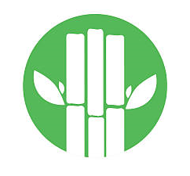

<!--
  Generated template for the CyclesPage page.

  See http://ionicframework.com/docs/components/#navigation for more info on
  Ionic pages and navigation.
-->
<ion-header>

  <ion-navbar>
    <ion-buttons start>
      <button ion-button icon-only menuToggle color="light">
        <ion-icon name="menu" ></ion-icon>
      </button>
    </ion-buttons>
    <ion-title>Ciclos de produccion</ion-title>
  </ion-navbar>

</ion-header>


<ion-content>
  <ion-list>
    <button ion-item>
      <ion-avatar item-start>
        
      </ion-avatar>
      <h3>Primer ciclo</h3>
      <p>I've had a pretty messed up day. If we just...</p>
    </button>
    <button ion-item>
      <ion-avatar item-start>
        
      </ion-avatar>
      <h3>Segundo ciclo</h3>
      <p>I've had a pretty messed up day. If we just...</p>
    </button>
  </ion-list>
  <ion-fab bottom right #fab>
    <button ion-fab color="danger">
      <ion-icon name="more"></ion-icon>
    </button>
    <ion-fab-list side="top">
      <button ion-fab><ion-icon name="logo-facebook"></ion-icon></button>
      <button ion-fab><ion-icon name="list-box"></ion-icon></button>
      <button ion-fab (click)="addCyclePage()"><ion-icon name="add"></ion-icon></button>
    </ion-fab-list>
  </ion-fab>
</ion-content>
